|
Lue Fan (范略)
Assistant Professor
Affiliation
NLPR (模式识别实验室), Institute of Automation
Chinese Academy of Sciences
Email
lue.fan at ia.ac.cn
|
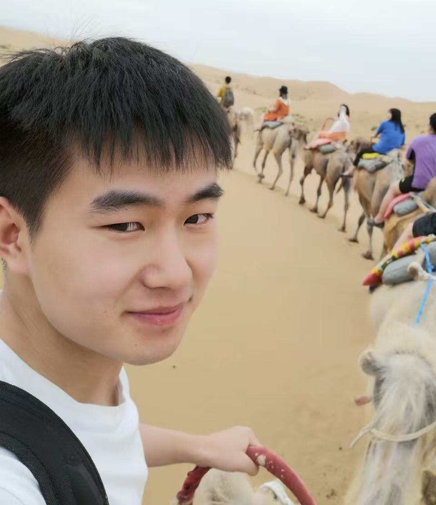
|
About Me
I am currently an assistant professor in NLPR, Institute of Automation, Chinese Academy of Sciences, working with Prof. Zhaoxiang Zhang. I got my Ph.D. degree from this lab in June 2024, supervised by Prof. Zhaoxiang Zhang, and bachelor's degree from Xi'an Jiaotong University (XJTU) in 2019, majoring in automation. I was a research intern at TuSimple, supervised by Dr. Naiyan Wang and Dr. Feng Wang. Currently, I am working closely with Prof. Hongsheng Li @ MMLab.
Our NLPR lab is actively recruiting interns and postdocs!
If you are interested in Autonomous Driving / Embodied AI / Coding Agent, please feel free to reach out via email: {lue.fan, zhaoxiang.zhang}@ia.ac.cn
News
-
2026-01 Three papers accepted to ICLR 2026 and one paper accepted to ICRA 2026
-
2025-11 Received the Outstanding Doctoral Dissertation Award of CSIG (中国图象图形学学会博士学位论文激励计划)
-
2025-08 Received the Outstanding Doctoral Dissertation Award of CAS (中科院优秀博士学位论文)
-
2025-07 Three papers accepted to ICCV 2025
-
2025-02 FreeSim and FlexDrive accepted by CVPR 2025
-
2025-01 LAW accepted by ICLR 2025
Selected Work
*: Equal Contribution; †: Corresponding Author
2026
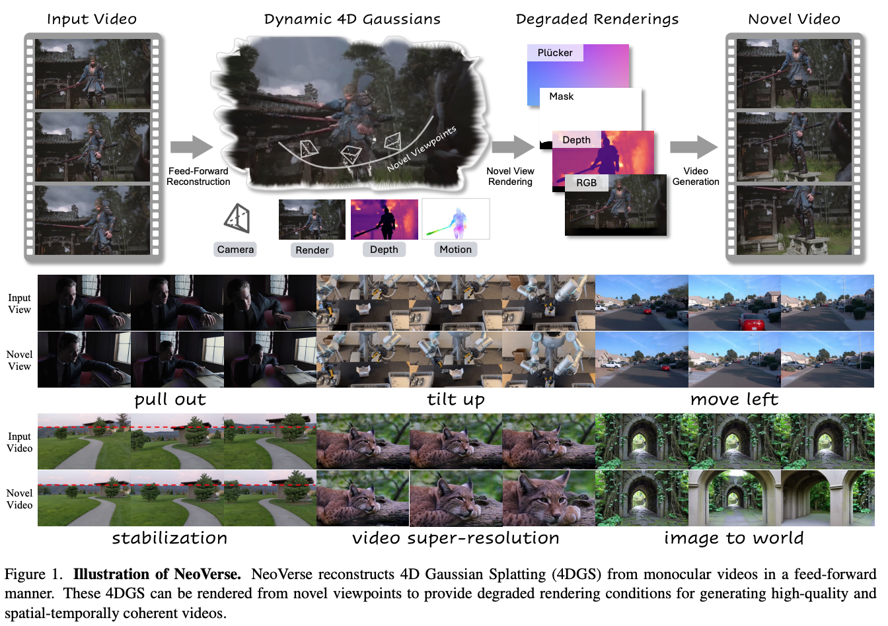
NeoVerse: Enhancing 4D World Model with in-the-wild Monocular Videos
Hot
Yuxue Yang,
Lue Fan†(project lead), Ziqi Shi, Junran Peng, Feng Wang, Zhaoxiang Zhang†
2025
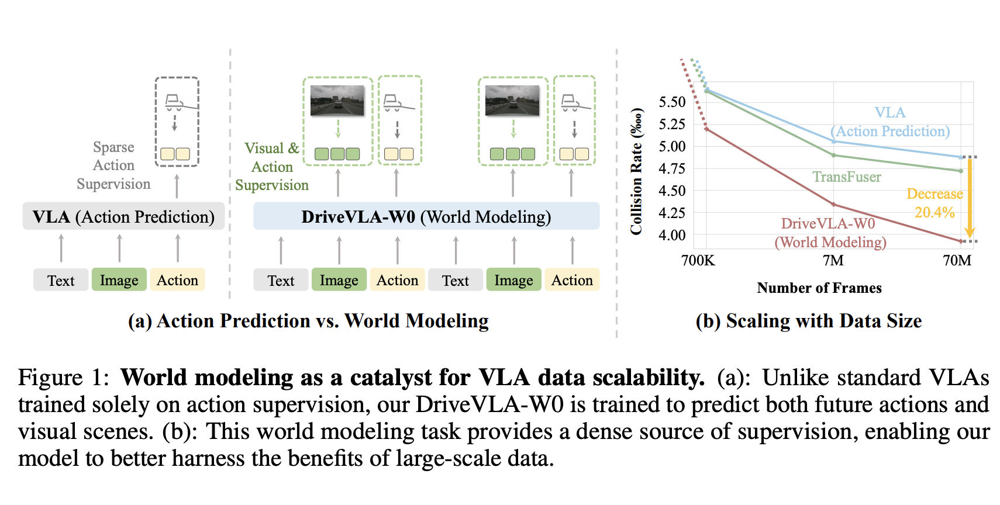
DriveVLA-W0: World Models Amplify Data Scaling Law in Autonomous Driving
Yingyan Li*, Shuyao Shang*, Weisong Liu*, Bing Zhan*, Haochen Wang*, Yuqi Wang, Yuntao Chen, Xiaoman Wang, Yasong An, Chufeng Tang, Lu Hou,
Lue Fan†, Zhaoxiang Zhang†
ICLR 2026
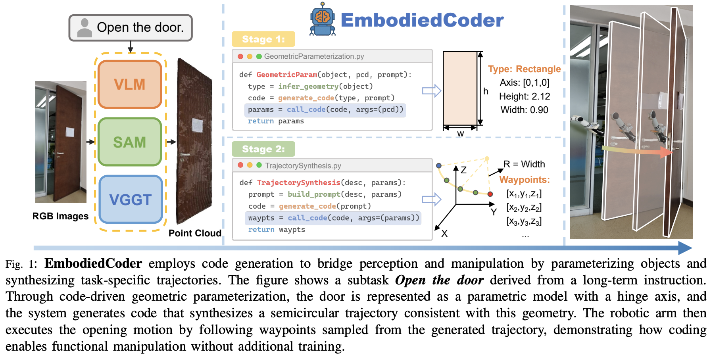
EmbodiedCoder: Parameterized Embodied Mobile Manipulation via Modern Coding Model
Zefu Lin, Rongxu Cui, Chen Hanning, Xiangyu Wang, Junjia Xu, Xiaojuan Jin, Chen Wenbo, Hui Zhou,
Lue Fan†, Wenling Li, Zhaoxiang Zhang†
ICRA 2026
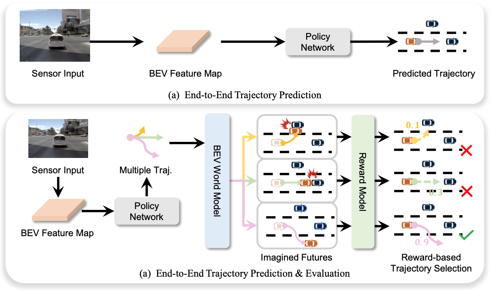
End-to-End Driving with Online Trajectory Evaluation via BEV World Model
Yingyan Li, Yuqi Wang, Yang Liu, Jiawei He,
Lue Fan†, Zhaoxiang Zhang†
ICCV 2025
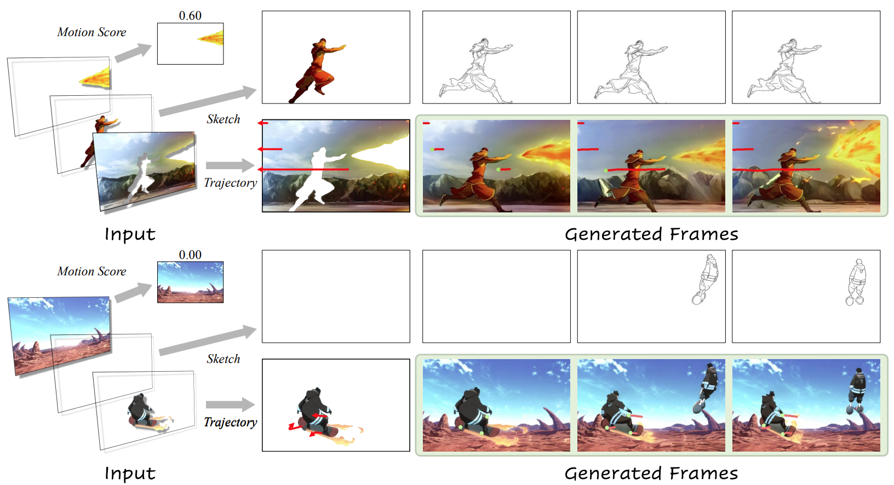
LayerAnimate: Layer-level Control for Animation
Yuxue Yang,
Lue Fan, Zuzeng Lin, Feng Wang, Zhaoxiang Zhang
ICCV 2025
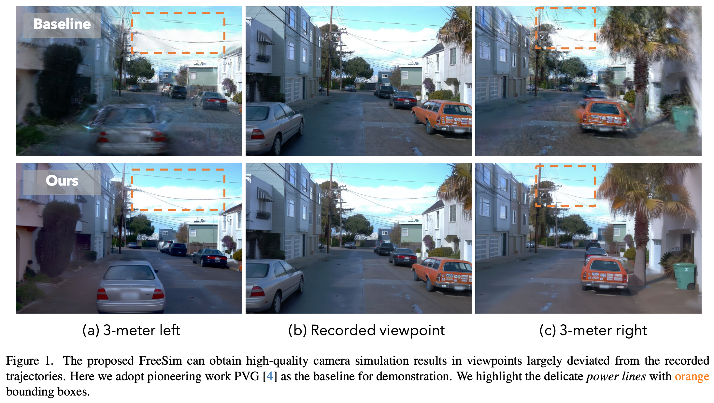
FreeSim: Toward Free-viewpoint Camera Simulation in Driving Scenes
Lue Fan*, Hao Zhang*, Qitai Wang, Hongsheng Li†, Zhaoxiang Zhang†
CVPR 2025
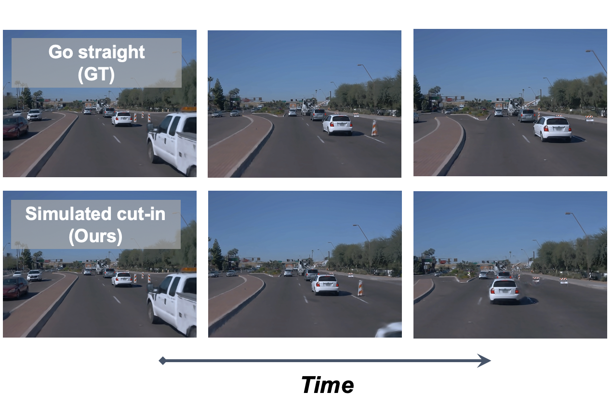
FlexDrive: Toward Trajectory Flexibility in Driving Scene Reconstruction and Rendering
Jingqiu Zhou*,
Lue Fan*, Linjiang Huang, Xiaoyu Shi, Si Liu, Z. Zhang†, Hongsheng Li†
CVPR 2025
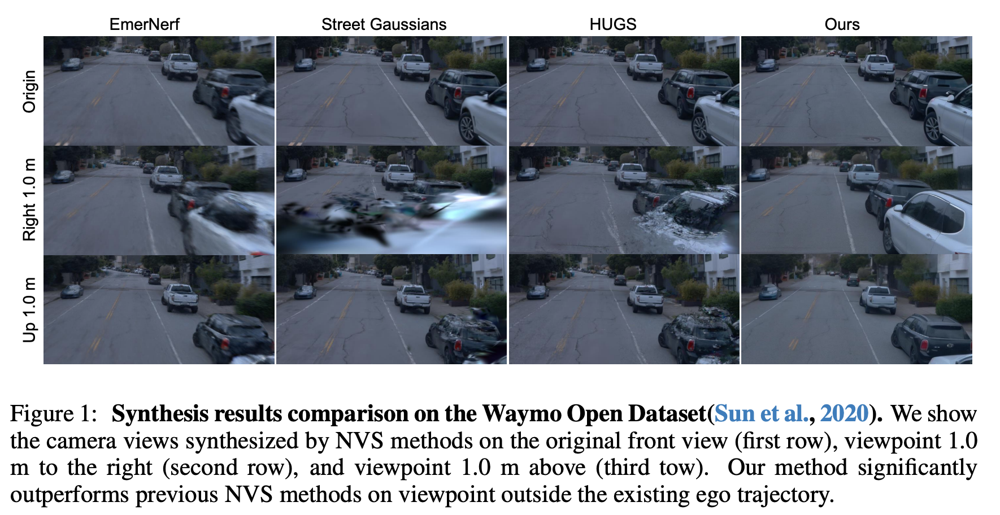
FreeVS: Generative View Synthesis on Free Driving Trajectory
Qitai Wang,
Lue Fan, Yuqi Wang, Yuntao Chen†, Zhaoxiang Zhang†
ICLR 2025
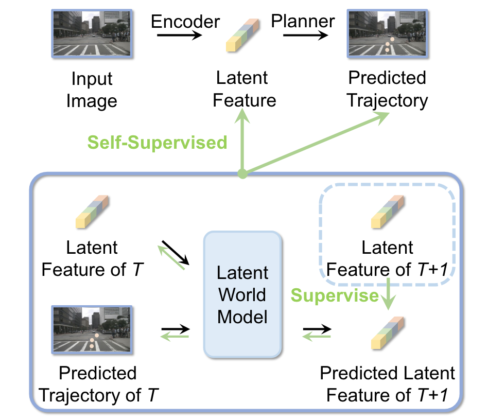
Enhancing End-to-End Autonomous Driving with Latent World Model
Yingyan Li,
Lue Fan, Jiawei He, Yuqi Wang, Yuntao Chen, Zhaoxiang Zhang, Tieniu Tan
ICLR 2025
2024
FSD V2: Improving Fully Sparse 3D Object Detection with Virtual Voxels
Lue Fan, Feng Wang, Naiyan Wang, Zhaoxiang Zhang
TPAMI 2024
OpenSatMap: A Fine-grained High-resolution Satellite Dataset for Large-scale Map Construction
Hongbo Zhao,
Lue Fan, Yuntao Chen, Haochen Wang, Yuran Yang, Xiaojuan Jin, Yixin Zhang, Gaofeng Meng, Zhaoxiang Zhang
NeurIPS 2024 D&B Track
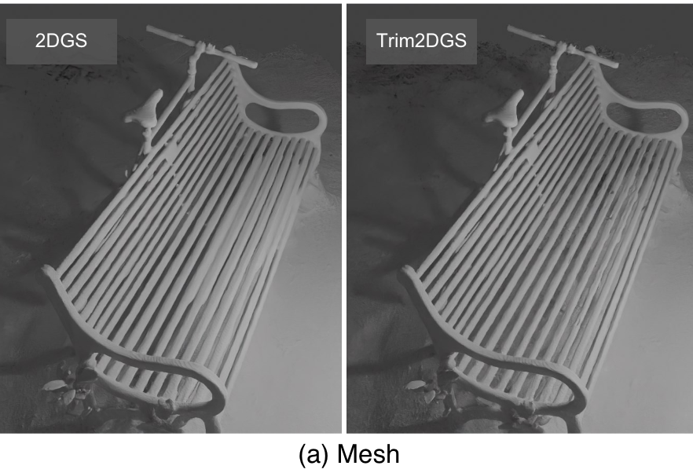
Trim 3D Gaussian Splatting for Accurate Geometry Representation
Lue Fan*, Yuxue Yang*, Minxing Li, Hongsheng Li†, Zhaoxiang Zhang†
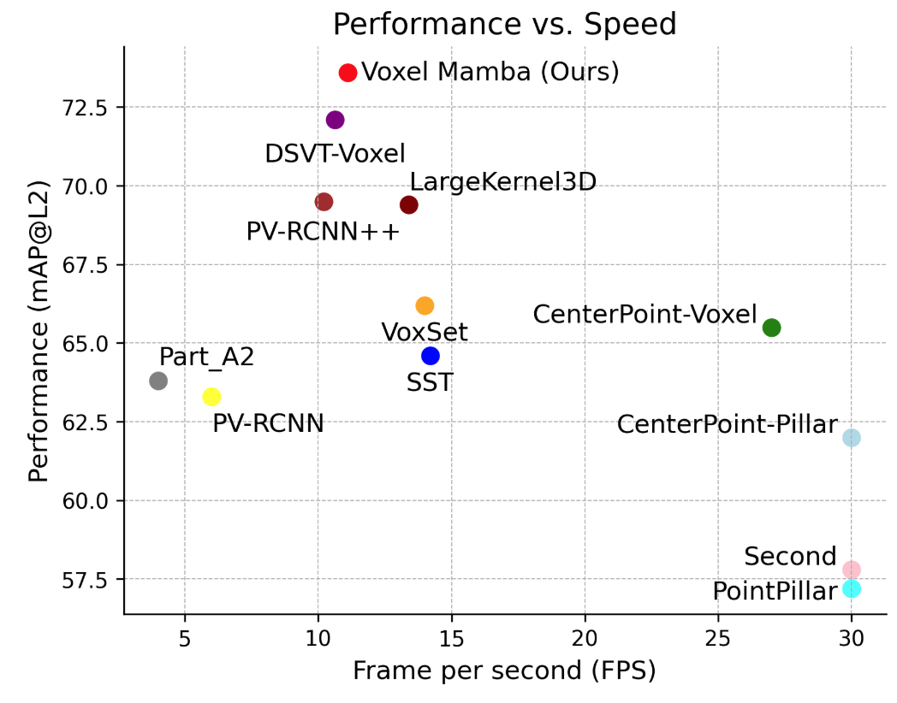
Voxel Mamba: Group-Free State Space Models for Point Cloud based 3D Object Detection
Guowen Zhang,
Lue Fan, Chenhang He, Zhen Lei, Zhaoxiang Zhang, Lei Zhang
NeurIPS 2024
Driving into the Future: Multiview Visual Forecasting and Planning with World Model for Autonomous Driving
Yuqi Wang*, Jiawei He*,
Lue Fan*, Hongxin Li*, Yuntao Chen†, Zhaoxiang Zhang†
CVPR 2024
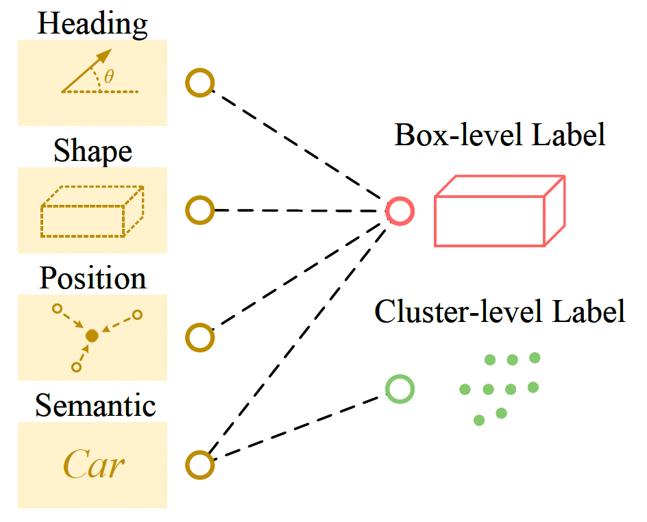
MixSup: Mixed-grained Supervision for Label-efficient LiDAR-based 3D Object Detection
Yuxue Yang,
Lue Fan†, Zhaoxiang Zhang†
ICLR 2024
2023
Once Detected, Never Lost: Surpassing Human Performance in Offline LiDAR based 3D Object Detection (CTRL)
Lue Fan, Yuxue Yang, Yiming Mao, Feng Wang, Yuntao Chen, Naiyan Wang, Zhaoxiang Zhang
ICCV 2023Oral
Super Sparse 3D Object Detection (FSD++)
Lue Fan, Yuxue Yang, Feng Wang, Naiyan Wang, Zhaoxiang Zhang
TPAMI 2023
2022
Fully Sparse 3D Object Detection (FSD)
Lue Fan, Feng Wang, Naiyan Wang, Zhaoxiang Zhang
NeurIPS 2022
Embracing Single Stride 3D Object Detector with Sparse Transformer (SST)
Lue Fan, Ziqi Pang, Tianyuan Zhang, Yu-Xiong Wang, Hang Zhao, Feng Wang, Naiyan Wang, Zhaoxiang Zhang
CVPR 2022
2021
RangeDet: In Defense of Range View for Lidar-based 3D Object Detection
Lue Fan*, Xuan Xiong*, Feng Wang, Naiyan Wang, Zhaoxiang Zhang
ICCV 2021